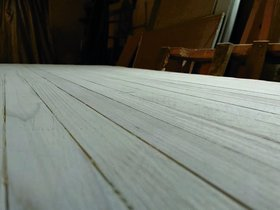
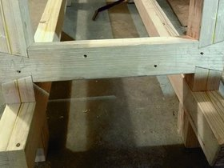

{kind=link}
Wood choice and delivery
This project use minimal tools, so it is important to have the minimal amount of work to do on the wood. Chose one by one the 2x4 to use. They should be very straigt, with regular wood fibers, and minimal amount of knots.
Ask the wood seller to cut to length the 2x4that are going to be used for the bench top. For the frame you can cut it yourself.
Besides the 2x4, I ordered one sheet of OSB cut in 3. OSB is cheap, sturdy, and generally useful.
" />{kind=link}
Wood storage
Construction wood is often not very dry, at least not to cabinet making standards. Because the completion of the workbench may take several weeks, it is important to store the wood as flat as possible.
A proper wood management is also important:
- mark defects on wood (knots, holes, etc.)
- assign wood for bench / frame, depending on quality
- order the wood for the bench top (alternating grain direction), number wood
{kind=link}
Bench top alignment
When glued together in precarious condition, bench top slabs are going to slide and move, which may result on an absolutely non-flat bench top. The soltion to avoid that is to guide the 2x4. To this end:
- create a guide with regularly spaced holes (4 holes total).
- drill holes in each bench top piece of wood.
- now when gluing, put either trunnion / screw / metal rod in each 4 holes to prevent the sliding.
{kind=link}
bench top gluing
Before any gluing, it is important to test, and to remember that a good gluing will save you many hours afterwards.
- assemble parts one by one, adjusting if necessary
- Take great care to put the wood pieces in the right orientation!
- the better the gluing preparation, the less work they will be to straighten the bench top.
{kind=link}
When gluing, use a long opening time glue to have time to perform adjusts. Check straightening, angles, etc. Note that I used additional straight pieces of wood with ratchet-strap to help get a flatter result.
" />{kind=link}
choosing wood for legs and frame
Select pairs of 2x4 planks to form futur frame and legs. Once the planks are chosen, define a unique marking that is going to help you
- uniquely identify the part
- uniquely orientate the part.
In addition
- knots should be outside of futur join area
- grain should be mismatched
- allow some room for cutting, waste, tests, etc.
{kind=link}
gluing legs
A proper gluing would require a great number of clamps. Instead, we can rely on screws to hold the join. To gain time when gluing, first screw to half length the screws.
All screws should be centred for more homogeneous pressure.
" />{kind=link}
Legs gluing
Use all the ratchet strap you have to exert more pressure. Also check for straightness, although it is less critical than for bench top.
" />![table top surfacing After at least 24h (more is better), you can start surfacing the bench top. The traditional method would be to use a plane, which is expensive and takes practice. Instead, I propose a method based on the japanese saw. The idea is to create pencil marks on the bench top, then use slicing motions with the saw at an angle of 30°, using the middle of the saw. Because a saw is perfectly straight, you only remove top spot. With enough repetition, you can straighten the whole bench." />](057_tabletop_surfacing.jpg){kind=link}
table top surfacing
After at least 24h (more is better), you can start surfacing the bench top.
The traditional method would be to use a plane, which is expensive and takes practice. Instead, I propose a method based on the japanese saw.
The idea is to create pencil marks on the bench top, then use slicing motions with the saw at an angle of 30°, using the middle of the saw.
Because a saw is perfectly straight, you only remove top spot. With enough repetition, you can straighten the whole bench.
" />{kind=link}
Table top straightening test
To check if the table is straight, use your straight edge with portable light. If you can see light from under the edge, it is a low point.
Also check for twisting by havign two parallel straight edges and eying if they are aligned.
" />{kind=link}
table top straightening
Here is the table top with pencil
" />{kind=link}
table top straightening
Notice than top spots have been removed by the saw, and low spot are still full of pencil.
" />{kind=link}
table top straightening test
An other alternative is to actually do as if you were to cross saw the table top, keeping the blade very straight.
You are only going to saw top spots, which will help visualize where to remove wood.
" />{kind=link}
table top finish
Finish the surfacing sanding with a flat piece of wood. Don't try to get perfect results, an accuracy of 1 mm is largely sufficient. The table top will keep deforming for the next weeks while drying anyway.
" /> {kind=link}
table top finish
You can get a very decent and smooth table top with this method.
Obviously using a plane will be much faster and give better results.
" />{kind=link}
leg joins preparation
For all joins, both pieces of wood to be joined should be flat, with square sides.
To achieve this, first flatten the largest dimension with sand paper, then use square to square other dimensions.
Usually, you don't need to flatten both large faces.
When everything is flat and squared, trace and cut the leg to size.
Precise cutting is actually difficult and needs practice beforehand.
" />{kind=link}
leg joins
Most of the joins have been designed to be half-joins, which is greatly facilitated by the fact that the pieces of wood are two 2x4 glued together. When you reached eh glue, you know you reached half wood.
" />{kind=link}
Legs
Finished legs should have same length and angle (15°).
" />{kind=link}
Frame
Once you have the legs, lay the frame on the ground.
Control length, angle, height of each parts, then draw the limits of the half wood join. Keep in mind that wood will be easy to remove if the join is to tight, but hard to had if the join is to loose.
Before drawing, all parts of the future joins should be flat and squared.
" />{kind=link}
Join between frame and legs
- saw the limits of the join, being careful to not go further that half wood.
- add other saw lines in the join to weaken the wood.
- You can also drill to weaken the wood, it's not very useful
- Pop the pieces of wood in the middle of the join.
- ensure that bottom of the join is flat with a chisel.
{kind=link}
Joins between leg and frame
THe presence of glue gauranties that you reached the bottom.
" />{kind=link}
joins between legs and frame
When dry fitting, use hard soap to lubricate the joins. The joins should fit in place using you weight or clamp (moderate force). To help the fitting, you can add strategic small bevels.
" />{kind=link}
frame leg
Carefully check the joins in situation. Orientation have to be respected for each part.
" />{kind=link}
joins between leg and frame
The two sides should be symmetric (not identical).
" />{kind=link}
Safe join disassembly
A small trick to disassemble joins.
- Do not use a hammer!
- Use your weight!
- put support under only one part of the join
{kind=link}
Safe join disassembly
- Put your weight on the un-supported part of the join.
{kind=link}
Sides
At this point, it's important to actually compare what should be with what is.
The next 4 joins (upper sides joined with legs and frame) are significantly more involved that the previous half wood join.
" />{kind=link}
complex join
I'd recommend to practice specifically. The join is no hard to execute, but require good sawing, and more importantly good drawing.
" />{kind=link}
complex join
Visualising the futur position of woood parts will help prevent mistakes. Note that this join will also block the transverse wood parts.
" />{kind=link}
complex join
The finish join slides in place, but is not blocked. To block the join, we could use pins. However, the execution would be difficult for a beginner project, therefore, we use ratchet straps to lock the parts in place.
" />{kind=link}
complex join
Note that sides have two different angles, while retaining a half dovetail shape.
" />{kind=link}
Side flat dovetail
The sides parts hold both parts of the frame together. The bottom ones are hold with a dovetail join.
" />{kind=link}
Side flat dovetail
Flat dovetail are theoretically simple, but sawing the angled cut can be difficult without a proper mean to hold the wood piece upright. It would require .. a workbench ! So we use saw and wood chisel instead. It takes more time though.
" />{kind=link}
Side flat dovetail
The dovetail are half wood, so half od the wood has to be removed. It can be done by weakening the wood and chopping it, or using a drill to fasten the process. Overall, if the grain of the wood is appropriate, sawing and chopping is faster than drilling.
" />{kind=link}
Side flat dovetail
If drealing to help remove superfluous wood, be mindfull of the drill depth.
" /> {kind=link}
Side flat dovetail
This joints need to be tight to stick in place. They are structurally important as well, so better be careful.
" />{kind=link}
Full frame
The full frame finished. Note that the ratchet strap is necessary to keep the top side joints in place and tight. Ratchet strap can be replaced by a pin design (advanced). Leg top parts need to be cut horizontally (tenon), and hole dug in bench top (mortise).
" />{kind=link}
Full frame
The resulting frame is extremely stable thanks to the 15° angle.
" />{kind=link}
Full frame
Note that work remains on the bottom of the frame, where additional lateral pieces are required to space the frame bottom left-right part.
" />{kind=link}
Table top mortises
This part is long and tedious. Remove has much wood as it is possible with the drill. Then use chisel from both sides to prevent chipping.
" />{kind=link}
Table top fitting
Be careful with the fitting. Usually speaking, it is easier to adjust tenons, but in this case, you might prefer to adjust mortises.
" />{kind=link}
Table top fitting
To engage the join ratchet straps are preferable to hammer blow. Ratchet straps allow to apply a moer symmetrical and tailored force in this case.
" />{kind=link}
Table top fitting
Notice that nothing prevents the left to right bottom parts to slide toward the inside. An additionnal wood part is needed, which will space the other parts.
" />{kind=link}
Frame bottom spacer
This join is yet another flat dovetail (half-wood). Be mindful that for the first time, the depth of the dovetail is not indicated by glue (limit between the two 2x4).
" />{kind=link}
Frame bottom space
Care is required to mortise to proper depth.
" />{kind=link}
Cleaning
Usually not part of tutorial, but important! Sweep with broom frequently (even just roughly), every hour or so.
Actually, still remaining work!
- If you used metal rods, they have to be cut so they don't stick.
- bench top sides need to be cut straights.
Upgrades :
- add a leg press.
- add an end wise end bench dogs.
- add holdfasts.
- use epoxy to increase workbench hardness.